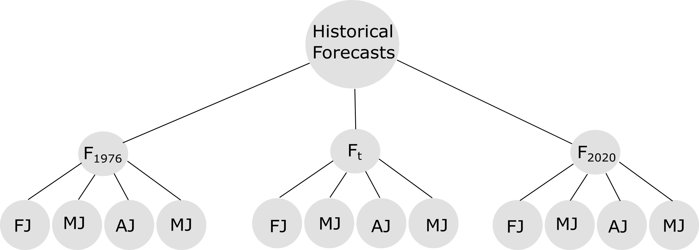
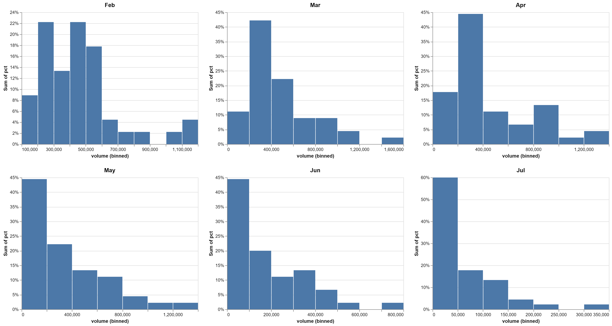
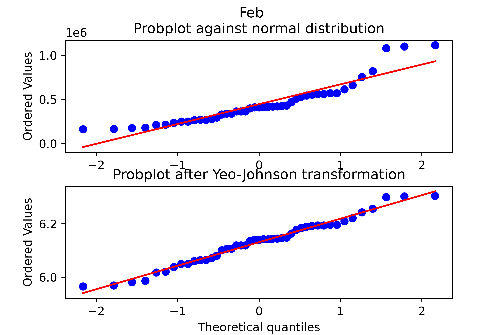
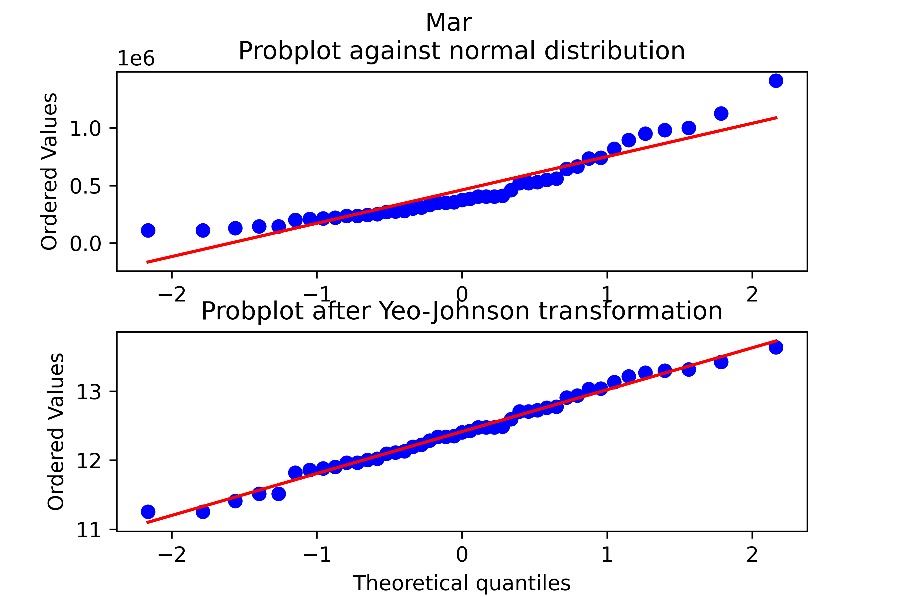
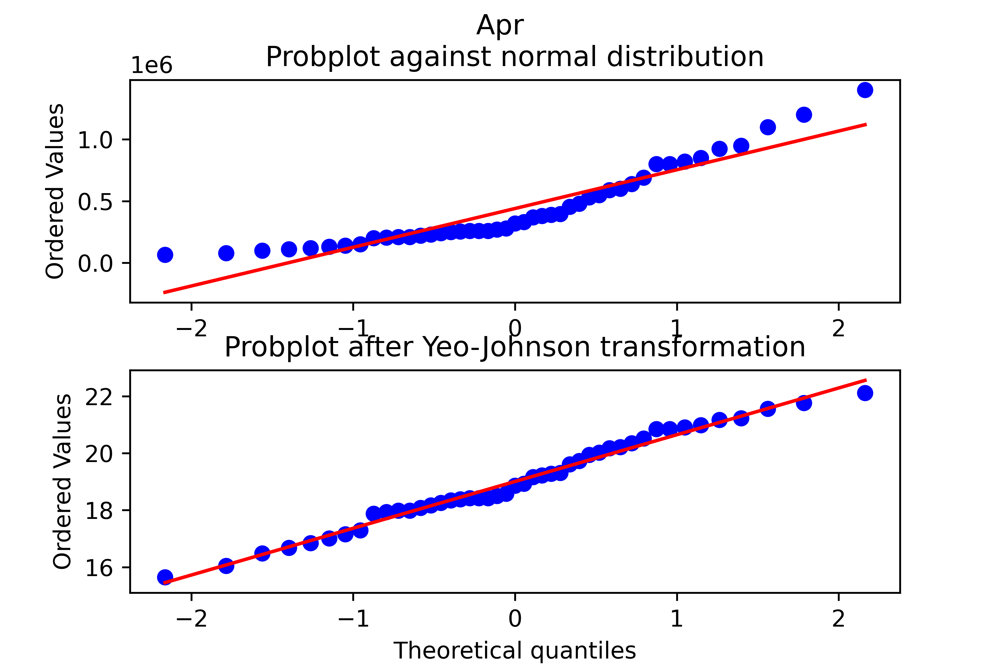
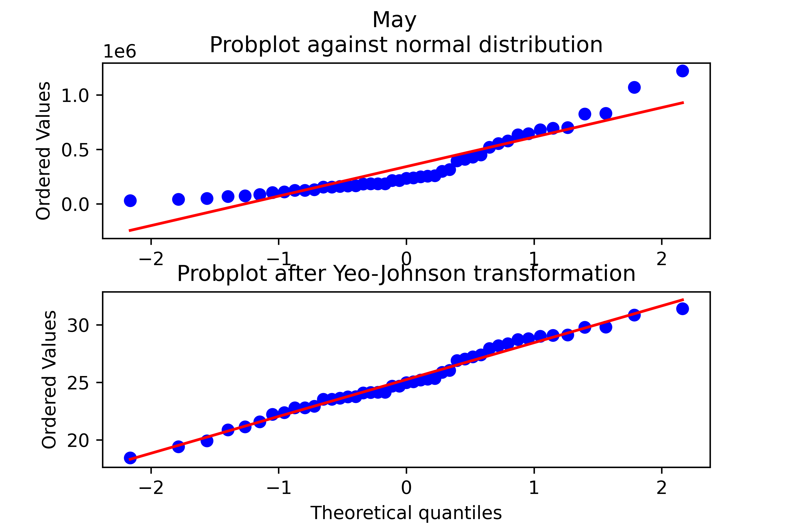
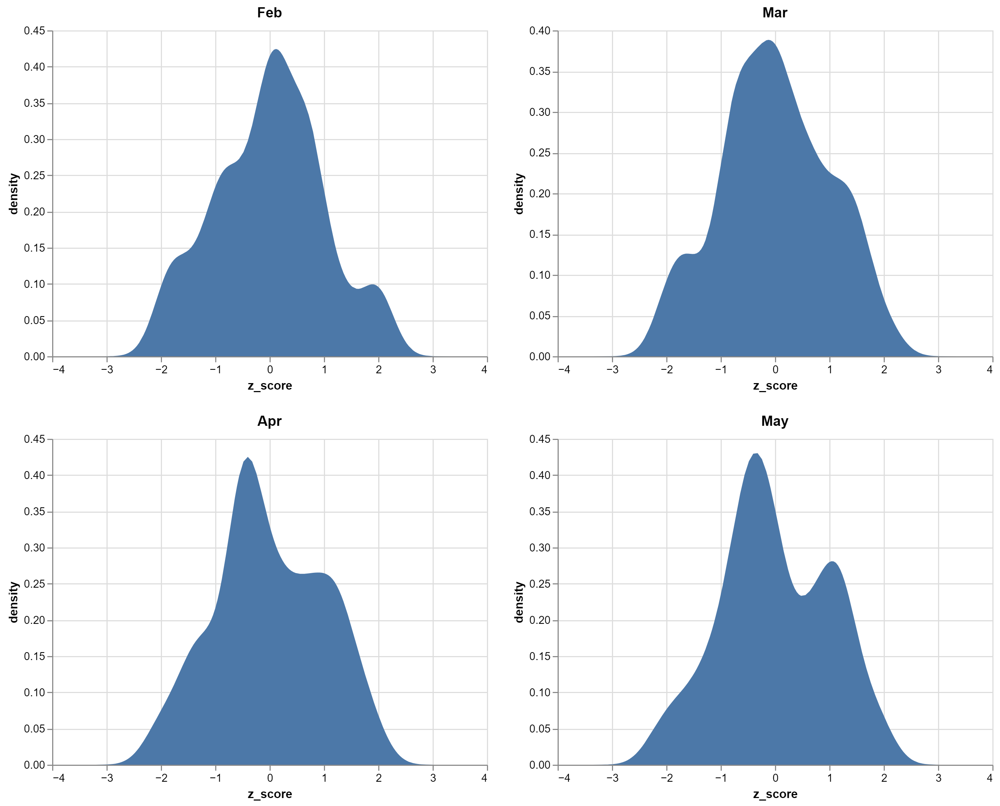

Isabella Forecast Structure
The structure of the "official" Isabella forecasts analyzed in this analysis is shown in {@fig:label}. The historical forecasts from WY 1976 to WY 2020 were analyzed here.
 {#fig:label}
The forecast for a water year () is described as a sequence month-to-July runoff projections for the calendar months (), February (), March (), April (), and May (). The forecast window gets successively smaller. A forecast has a 5-month forecast window (February - July), whereas a forcast window has a 4-month forecast window (March to July). The sequence of forecast volumes for a water year can be described as:
The difference between the forecasted runoff volumes and the observed runoff volume () provides an estimate of forecast error ().
Data Transformation
In this section we describe the data analysis required to model the forecasts at Isabella for synthetic events.
Forecasts
A historical analysis of the month-to-July runoff volume forecast () found the errors have a positive skew. The distributions of the z-scores () of the untransformed (raw) month-to-July runoff volumes is shown below:

From a computation perspective, it is desirable to model the forecast runoff volumes as normally distributed. The Box Cox power transformation was evaluated to determine if the normal assumption could be used in this forecast generation model. The Box Cox transformation is a fitted model that varies by the model parameter . The model was fitted for each month-to-July using value obtained from maximum log-likelihood algorithm encoded within the python library scipy.
| Month-July | |
|---|---|
| FebJ | -0.134082 |
| MarJ | -0.00535718 |
| AprJ | 0.0590321 |
| MayJ | 0.102959 |
Probability plots of the untransformed (raw) and Box Cox transformed forecast runoff provide a graphical assessment of the empirical data and any proposed transformations. A probability plot consists of two series, 1) a cumulative distribution of specified theoretical distribution and 2) a cumulative distribution of the empirical data. The closer the data scale to following a 1:1 ratio, the closer the empirical data follow the specified theoretical distribution. For all month-to-July forecast windows, the Box-Cox transformed values more closely follow the line of perfect agreement with a theoretical normal distribution.
| { width=3in } | { width=3in } |
| { width=3in } | { width=3in } |
The distribution of the Box Cox transformed z-values also appear more symmetrical (i.e. normal) than the untransformed (raw) runoff volumes shown above.

The statistical moments of the untransformed (raw) month-to-July and Box Cox transformed forecast runoff volumes are tabulated below.
| BoxCox Kurtosis |
Skew |
Variance |
Mean |
Date2Volume Kurtosis |
Skew |
Variance |
Mean |
|
|---|---|---|---|---|---|---|---|---|
| Feb | -0.431 | 0.009 | 0.008 | 6.131 | 1.718 | 1.375 | 5.49e+10 | 446422 |
| Mar | -0.613 | 0.001 | 0.352 | 12.415 | 0.981 | 1.214 | 8.96e+10 | 461422 |
| Apr | -0.744 | -0.011 | 2.584 | 19.007 | 0.543 | 1.132 | 1.05+11 | 440222 |
| May | -0.655 | -0.019 | 9.800 | 25.245 | 0.963 | 1.253 | 8.07e+10 | 342489 |
Notably, the Box Cox transformed data have skew values close to zero, which suggest the transformed data can be modeled using a normal distribution.
| Dataset | Statistic | Value |
|---|---|---|
| boxcox | kurtosis | -0.664 |
| skew | -0.002 | |
| variance | 2.55641 | |
| mean | 14.262 | |
| Date2Volume | kurtosis | 1.746 |
| skew | 1.404 | |
| variance | 6.072e+10 | |
| mean | 323663 |
Forecast Generation Procedure
To simulate reservoir operations for Isabella Dam, the reservoir model requires the following inputs:
- Inflow Hydrograph
- Forecast Time Series
- Irrigation Demands
The inflow hydrographs are developed using the hydrologic sampler are considered inputs to the forecast generation procedure. The forecast generation model described here is developed following an autoregressive lag-1 (AR1) model described by:
The first term of the AR1 model () is the starting point for the calculation and is calculated directly from the inflow hydrograph for the current month-to-July forecast window . The second term of the AR1 equation is called the persistence term where the difference between the forecast from the previous month and current is scaled by the model parameter . An estimate of for each month-to-July forecast is calculated as the lag-1 autocorrelation the time series of successive forecasts:
Where
- is a set of lag-1 correlation metrics for each month-to-July forecast window.
- is the time series of all forecasts for the current forecast window.
- is the time series of all forecasts from the previous forecast window.
By definition ranges between -1 and 1. A value close to 1 indicates successive forecasts will scale following an a direct proportionality, whereas a value close to -1 indicates forecast volumes scale following an inverse proportionality. The set of model parameters can be thought as a set of successive lag-1 autocorrelation metrics.
The forecast generation procedure is completed in the following steps.
-
Accept Event Seed from HEC-WAT
- The seed allows for reproducible examples and used to initialize the random number generation for the forecast generation algorithm.
-
Generate a sequence of uniform numbers from a normal distribution. By definition the uniform numbers range between 0 and 1 and can be thought as a probability. The random numbers are generated using a type of pseudorandom number generator described by the Mersenne Twister algorithm.
-
Convert the generated random numbers from step 1 to inverse normal using the empirical algorithm. The values from this algorithm represent forecast volumes scales linearly by the and (e.g. z-value).
#Get z-score from random variable # Inverse Normal distribution approximation (Z-score from cumulative probability) # https://www.johndcook.com/blog/python_phi_inverse/ # based on algorithm given in "Handbook of Mathematical Functions" by Abramowitz and Stegun c = [2.515517, 0.802853, 0.010328] d = [1.432788, 0.189269, 0.001308] #note: log is base e by default if no base is specified if random_val < 0.5: t = (-2 * log(random_val)) ** 0.5 num = (c[2] * t + c[1]) * t + c[0] den = ((d[2] * t + d[1]) * t + d[0]) * t + 1.0 z = - (t - (num/den)) else: t = (-2 * log(1.0 - random_val)) ** 0.5 num = (c[2] * t + c[1]) * t + c[0] den = ((d[2] * t + d[1]) * t + d[0]) * t + 1.0 z = (t - (num/den))
When the inverse normal algorithm is ran for all of the from step 2, we have a sequence of inverse normal values.
-
Calculate the a sequence of AR1 .
auto_corr_z_vals = [0,0,0,0] for i in len(z_vals[1:]): if i == 0: #No persistance term for inital calculation val = z_{init} + random_error auto_corr_z_scores[i] = val else: #Include persistance term val = z_score[i] + phi_hat[i]*(z_vals[i] -z_vals[1+1]) + random_error auto_corr_z_scores[i] = val
-
Backtransform the AR(1) sequence of z-scores using the box-cox transformation described by:
-
Convert the backtransformed z-scores using and .